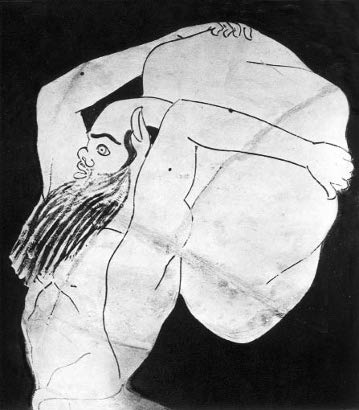
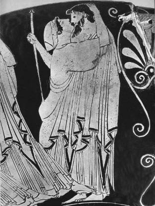
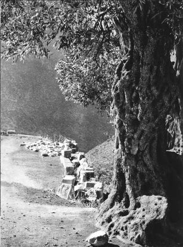

İnsan yaşamını ve dünyayı araştırma ve çözüp anlamanın şu öbür yöntemine –Yunan tragedyasına– dönelim. Bilim ve felsefe kadar tragedya da kendini dünyayı aklama ve açıklama tarzı olarak gösterir. Tragedya, Yunan düşüncesinin hâlâ dine bağlı bulunduğu bu çağda, İ.Ö. V. yüzyılın ikinci yarısında böyledir. Bu tarihte, insan yaşamının sorunlarını çözmek için bunları göğün parlak aydınlığına çıkarmayan, insanlarının buyurgan iradesine teslim etmeyen düşünürler ve şairler de sayıca çok azdır.
Hepsinin arasında Sophokles tanrılara inanan, tüm engellere karşın inanan biridir; kaderin belirsizliği ve ahlakın boşlukları karşısında inançlıdır. Bir efsane, şairin uzun süren ve dinç geçen yaşlılığı boyunca onunla birlikte yol almış gibidir: Bu mit, inancı yaralar göründüğü gibi insanın adalet duygusunu da yaralayan başka her şeyden daha korkutucu Oidipus efsanesidir. Sophokles on beş yıl arayla, bu efsane ile iki kez mücadeleye girer. İ.Ö. 420 yılında Kral Oidipus’u yazar: Bu sırada yetmiş beş yaşındadır. 405’te, doksan yaşında, hemen hemen aynı konuyu, sanki ona vermiş olduğu çözüm hakkında hâlâ duraksar gibi, yeni bir biçim altında yeniden ele alır ve Oidipus Kolonos’ta’yı, yazar. Düşüncesinin gideceği yere kadar gitmek ister. Kısacası, tanrıların bir suçsuzu cezalandırıp cezalandırmayacaklarını bilmek ister... Böylesi tanrıların dümenini ellerinde tuttukları bir dünyada insanın ne olduğunu bilmek ister.
Efsanenin konusu biliniyor. Bir adam, babası olduğunu bilmeden, onu öldürür; istemeden annesiyle evlenir. Tanrılar onu bu suçlardan ötürü cezalandırırlar; oysa tanrılar daha o doğmadan yazgısını bu suçlara yöneltmişlerdir. Oidipus, bizim sorumlu tutmadığımız bu hatalarla suçlanır; tanrılardan bağış diler... Garip din, kaba ahlak, inanılmaz durumlar, keyfi psikoloji. İşte, Sophokles halkına bu tuhaf öyküyü, bu utanılacak efsaneyi anlatmak ister. Kaçınılmaz özelliklerinden soymaksızın ona, anlamını baştan sona değiştiren bir insan cevabı katmak ister.
I
“Ey seyirci, zembereği bir insan yaşamı boyunca ağır ağır açılacak biçimde sonuna kadar kurulmuş, bir ölümlüyü kesin olarak yok etmek için cehennem tanrılarının yaptığı o en kusursuz makinelerden birine bak.”
Yazarın çok haklı olarak Saatli Bomba adını verdiği şu modern Oidipus’un perdesi, Cocteau’da[5] bu sözlerle açılır. Bu ad antik yapıt için de geçerli olurdu. En azından onun hem en görünür anlamını hem de gelişme biçimini anlatırdı.
Gerçekten de Sophokles, dramasının olay akışını bir makinenin kurulması gibi kurdu. Yazarın kurgudaki başarısı tuzağı düzenleyen kimsenin ustalığıyla yarışır. Dramanın teknik yetkinliği, sıkı gelişimi içinde, Bilinmez Birileri tarafından çok iyi kurulan bu felaketin mekanik gelişimini esinler. Bir insan mutluluğunun iç yapısını patlatasıya kadar parçalayacak saatli ya da tanrısal bir bomba; olay akışının tüm parçalarının, psikolojinin tüm tetiklerinin bu zorunlu sonucu doğuracak biçimde birbirlerine komuta ettiklerini görmek bir zevktir. Başta Oidipus olmak üzere bütün kişiler olayın katı gelişimine bilmeden yardım ederler. Onlar bizatihi makinenin parçalarıdırlar, yardımları olmadan ileri gidemeyecek olayın, kolanları ve çarklarıdırlar. Kendilerine verilen bu görevi bilmezler. Bu düzeneğin hangi amaca yöneldiğini bilmezler. Uzaklarda, yaklaşmasını belli belirsiz algıladıkları bu makine ile ilişkisiz, özerk canlılar gibi hissederler kendilerini. Kendi işleri, namuslu bir insanlık uğraşı –erdem eğitimi– ile yiğitçe kazanılmış mutlulukları ile oyalanan insanlardır... Ve birden bilmeden çalıştırdıkları o koca tank gibi şeyi, birkaç metre ötelerinde görürler; onları ezmek için üzerlerine yürümekte olan kendi yaşamlarıdır.
Dramanın ilk sahnesi bize insan olmanın doruğunda bir adamın görüntüsünü sunar. Kral Oidipus sarayının basamaklarındadır. Diz çökmüş halkı, bir rahibin sesiyle ona yalvarmaktadır. Thebai’nin üstüne bir felaket, yaşam tohumlarını yok eden bir salgın çökmüştür. Oidipus vaktiyle siteyi Sfenksden kurtarmıştı. Bugün de ülkeyi kurtarmak yine ona düşer. Uyruklarına göre o “insanların en iyisi, birincisi”dir. Ardında geçmişteki işlerinin, başarılarının, iyiliklerinin muhteşem alayını sürüklemektedir. Sophokles bu büyük kralı hiç de tarihinden başı dönmüş kibirli bir prens, sert bir efendi olarak göstermemiştir. Ona sadece halkına karşı iyilik duyguları, ince davranışlar yükler. Kendisine yalvarmaya gelmelerinden önce bile, düşünmüş ve öyle harekete geçmiştir. Kaynı Kreon’u biliciye danışmak için Delphoi’ya göndermiş, böylece her zamanki kararlı karakterini göstermiştir. Şimdi uyruklarının başvurusu üzerine duygulanır ve kendisi bütün Thebai adına acı çektiği için hiçbir Thebai’linin artık üzülmeyeceğini söyler. Gerçeği söylediğini biliriz. Kendisini, yönettiği ve sevdiği yurdundan sorumlu hisseder. Dramanın açılışından itibaren yüzü, insanın ve önderin en yüce erdemlerinin somut örneğidir. Tanrılar onu cezalandırmak için gururunu ya da küstahlığını bahane edemezler. Bu insanda her şey içtendir; bu yüce tarihte her şey hak edilmiştir. İçimizde yer eden ilk görüntü budur. Son sahnede, aynı yerde, basamakların üstünde gözleri kan içinde bir sürgün kral belirecektir –bir yücelik doruğunun yerini alan bir sefalet doruğu görüntüsü.
Bu altüst oluşu bekleriz bizler: Bu yazgının sonunu biliriz. Oyunun başından itibaren, birtakım alaylı dokundurmalar –şiire havasını veren o “trajik alay”– kişilerin sözlerinde, kendileri farkında olmadan ortaya çıkar ve bizi haberdar ederler. Gerçekten de oyunlarını oynadıkları eskimiş, çoktan bitmiş ve artık onun dehşetini ortaya çıkarmaktan başka yapılacak bir şey kalmamış olan dramadan habersiz olan bu kişiler, kendileri için ancak beylik ve iç açıcı bir anlamı, tamamıyla güven içinde dayandıklarını gördüğümüz bir anlamı olan falan sözü söylerler. Oysa bu aynı sözün geçmişi ve geleceği, her şeyi bilen seyirci için tamamen farklı bir anlamı, tehditkâr bir anlamı vardır. Şair kişilerin bilgisizliği ve seyircinin bilgisi olmak üzere çift perde üstünde oynar. Aynı anda duyulan iki anlam çok kötü bir kakışma içinde karışan iki nokta gibidirler. Öte yandan burada basit bir üslup tutumu yoktur. Bu alaylı sözleri, kişilerin dudaklarında, sanki onlar istemeden, olayın ardına gizlenen esrarlı bir gücün etkisiyle oluşmuş gibi hissederiz. Bir tanrı insanların temelsiz güvenleri ile alay etmektedir sanki...
Dramanın gelişiminin kuruluşu kaderin her sefer Oidipus’a yeni bir darbe daha indirdiği dört “bölüm”lü bir sıralanmadır. Sonuncusu onu yıkar.
Bu yazım o kadar açıktır ki seyirci onun yönünü ve sonunu hemen kavrar. Kaderin tragedya kahramanının karşısında attığı dört adımı görür. Şair her sefer efsanede konu edilmeyen bir durum uydurduğunda, seyirci tanrıların insanı nasıl cezalandıracağını tasarlayamaz. Ama bölümlerin aralarındaki bağlantıyı, olay akışının bir saat işleyişi gibi geliştiği art arda gelen dört bölümün tutarlılığını hemen kavrar. Seyirciye göre tanrı tarafından tasarlanan bir planın düzenli uygulaması, mantıklı sonucu olan her şey, Oidipus için tersine, bağlantısını hiçbir zaman fark edemediği ve Laios’un katilini ararken izlediğine inandığı düz gidişi ancak kesintiye uğratan ya da saptıran bir dizi olaylar, rastlantılar gibi görünür. Gerçekten de Oidipus demirden bir elle ve dosdoğru, fark etmediği bir amaca doğru, kendinden başkası olmayan, ama farklı izlerde her bakımdan şaşkın bir suçluya doğru götürülür. Her olay onu yeni bir yöne savurur. Her darbe onu, bazen sevinçle, serseme çevirir. Hiçbir şey olacaklar konusunda onu uyarmaz. Demek ki, olay akışının gelişiminde aynı anda izlediğimiz iki farklı hareket vardır: Bir yanda, karanlığın ortasında ışık saçan bir parıltının amansız ilerleyişi, öte yanda, karanlıkta görünmeyen engellere çarpan, bundan kuşkulanmadan, gitgide ışıklı odağa doğru çekilen bir varlığın çevresinde fır dönerek el yordamıyla yürüyüşü. İki çizgi ansızın kesişir: Böcek alevle karşılaşmıştır. Bir anda her şey bitmiştir. (Ya da öyle gibidir... Çünkü şimdi ışık hâlâ bu bilinmedik ocaktan mı, yoksa yıldırıma çarpılmış insandan mı gelir?..)
Kaderin vurmak için kullandığı ilk araç bilici Teiresias’dır. Oidipus Laios’un öldürülmesini aydınlatmasına yardım etsin diye kör ihtiyarı getirtmiştir. Apollon Thebai’nin kurtuluş bedelini katilin kovulması olarak bildirmiştir. Teiresias her şeyi bilir: Kör bilinmezden haber verendir. Laison cinayetini işleyen kimdir, bilir, hatta Oidipus’un kimliğini, onun Laios’un oğlu olduğunu bilir. Ama bunu nasıl söyleyecektir? Ona kim inanır? Teiresias gerçeğin estireceği fırtına karşısında geriler. Cevap vermeyi reddeder ve bu öteleme doğaldır. Oidipus’un buna kızması da doğaldır. Thebai’yi kurtarmak için söyleyecek sözü olan adam karşısındadır, ama bu adam susmaktadır. Oidipus gibi iyi bir yurttaş için daha utanç verici ne olur ki? Daha kuşkulu ne vardır? Bir tek açıklama akla gelir: Öyleyse Teiresias vaktiyle suçlunun ortağı olmuştur, sessizliği ile bunu örtmeye çalışmaktadır. Bu durumda, bu cinayet kimin çıkarınadır? Laios’un mirasçısı Kreon’un. Sonuç: Aranan katil Kreon’dur. Oidipus, soruşturmasının bitmek üzere olduğuna hemen inanır ve inatçı sessizliğiyle yolunu kesen ve herhalde komploya karıştığı için, kendisinin gerek duyduğu ipuçlarını vermeye yanaşmayan Teiresias’a kızar.
Kralın din adamına yönelttiği bu suçlama da eşit bir zorunlulukla, yeni bir durum doğurur. Sertlikle götürülen psikolojik oyun cehennem makinesini harekete geçirir. Hakaret gören Teiresias olsa olsa gerçeği haykırabilir ancak: “Aradığın katil, sensin...” işte, indirilen ilk darbe budur, Oidipus ardına düştüğü ve anlayamadığı bu gerçekle karşı karşıyadır. Öfke seliyle yükselen sahnenin devamında bilici daha da ileri gider: Daha beter bir gerçek deryasını yarı yarıya açıklar: “Laios’un katili Thebai’lidir. Babasını öldürmüştür, anasının yatağını kirletmektedir.” Ama Oidipus Teiresias’ın kendisine sunduğu bu gerçeği kesinlikle kavrayamaz. Laios’u öldürmediğinden, Korinthos (Korintos) kralının oğlu olduğundan, genç yaşında, Thebai’yi sfenksden kurtardığı günden önce, bu ülke ile hiçbir zaman bir alışverişi bulunmadığından emindir. Şaşkın ama sarsılmamış halde sarayına döner. Kaderin ona işaret ettiği sahte ize –Kreon’un kuruntu komplosuna– her zamanki ateşli tutumuyla atılacaktır.
Oidipus’a ikinci darbeyi indirmek için tanrının seçtiği araç İokaste’dir (İokasti). Kraliçe kocası ile kardeşi arasında patlak veren tartışmaya karışır. Kralı sakinleştirmek, onu Teiresias’ın sözleri konusunda rahatlatmak ister. Ona bilicilerin yararsızlığının açık bir kanıtını verirken bunu başardığını sanır. Vaktiyle bir bilici Laios’a oğlunun eliyle öleceğini haber vermişmiş. Oysa bu kral, ülke dışına yaptığı bir yolcukta, bir yol çatında haydutlarca öldürülmüş ve hayatta sahip olduğu tek oğul da, doğumundan üç gün sonra, dağda ölüme terk edilmiş. İşte bilicilerin sözüne verilecek değer bu kadarmış.
İokaste’nin Oidipus’u rahatlatmaya yönelik bu sözleri açıkça ilk kez onun suçsuz olduğu inancını sarsacak sözcüklerdir. Cehennem makinesinde güveni kuşkuya, güvenliği kaygıya dönüştürebilen bir küçük yay vardır. İokaste istemeden işte bu yaya dokunmuş olur. Laios’un ölümü hakkında bir öykünün içine düşünmeden sokulan şu önemsiz ayrıntılardan birini vermiştir: Bu arada Laios’un “bir yol çatında” öldürülmüş olduğunu söylemiştir. Bu ayrıntı Oidipus’un bilinçaltına girmiş, orada bütün bir unutulmuş anılar yığınını yerinden oynatmıştır. Kral birden eski bir yolculuktaki bu yol çatını, bir at arabası sürücüsüyle yapmış olduğu o kavgayı, ona kamçısıyla vuran şu ihtiyarı, ani gençlik öfkesini ve vurduğu darbeyi yeniden görür gibi olmuştur... Teiresias yoksa doğru mu söylemiştir? Oidipus’un kendisini bu yol çatına götüren olaylar dizisinden henüz en ufak kuşkusu olmaz. İokaste’nin öyküsünde “üç yol kavşağı” sözcüklerini duyar duymaz büsbütün anılarına dalan Oidipus, aklını çok daha korkunç bir yola sokması olası sonraki cümleye, yani terk edilen çocukla ilgili cümleye takmıştır. Öyleyse onun babasını öldürebilmiş olmasını düşünmesi olanaksızdır, ama Laios’u öldürebileceğini kabul etmek zorundadır.
Bu durumda Oidipus İokaste’yi sorularla bunaltır. İokaste’nin kendisine anlattığı cinayette şimdi işlediğini hatırladığı cinayetle uyuşmayan bir ayrıntı bulmayı umar. “Neredeymiş bu yol çatı?” Yer tastamam uyar. “Cinayet ne zaman işlenmiş?” Zaman tastamam uyar. “Bu kral nasıl bir insandı? Kaç yaşındaydı?” İokaste şöyle karşılık verir: “Uzun boyluydu. Saçı ağarmaya başlamıştı...” Sonra, bunun ilk kez farkına varıyormuş gibi şöyle der: “Biraz sana benziyordu galiba.” Burada trajik ironinin gücü ve seyircinin bu benzerliğe verdiği, İokaste’nin bilmediği anlam yakalanır... Yine de bir ayrıntıda uygunluk yoktur. Yol çatındaki cinayetten kurtulan tek uşak, efendisi ile arkadaşlarının bir haydut çetesi tarafından öldürüldüklerini (kendini aklamak için yalan söylediğini tahmin ederiz) söylemiştir. Oidipus tek başına olduğunu bilir. Bu uşağı aratır. Bu yanlış ayrıntıya dört elle sarılır, oysa seyirci bu karşılaşmadan bir felaket beklemektedir.
Kaderin üçüncü saldırısı: Korinthos’lu ulak. Oidipus geçen sahnede gençliğinde kendisine söylenen bir kehanetten söz etmiştir İokaste’ye: babasını öldürecek ve annesi ile evlenecektir. İşte o bu yüzden Korinthos’tan ayrılıp Thebai yolunu tutmuştur. Şimdi bir ulak gelip ona kral Polybios’un (Polivios), onun öldürmesi gereken şu babanın öldüğünü bildirir. İokaste çok sevinir: “İşte bir yalancı bilici daha!” Oidipus onun sevincini paylaşır. Yine de, tanrının ikinci tehdidine uğramak korkusuyla Korinthos’a dönmeyi reddeder. Ulak onu rahatlatmaya kalkışır. Az önce İokaste’nin yaptığı gibi, tamamen iyi niyetle, makinenin bir parçasını oynatır ve felaketi hızlandırır. “Niçin Merope ile evlenmekten korkuyorsun?” der. “O senin annen değil ki.” Daha sonra da şöyle der: “Polybios da benim kadar senin baban değildi!” Oidipus’un merakına sinsice sokulan apayrı yeni bir iz. Oidipus bunun ardına düşer. O şimdi Laios cinayetinden yüz fersah uzaktadır. Artık yalnızca doğumu ile ilgili sırrı çözmeyi –neşeli bir istekle– düşünür. Sorularla ulağı sıkıştırır. Bu adam Oidipus’a, vaktiyle daha çocukken onu Korinthos kralına kendisinin teslim ettiğini haber verir. Onu Laios’un uşağı olan Kithairon (Kitarion) dağındaki bir çobandan almıştır.

Kentaur. Vazo resmi. 480’e doğru.
İokaste birdenbire anlamıştır. İki yalancı biliciyi tek bir doğru kehanette kavuşturur. O, terk edilen çocuğun anasıdır: Zavallı yavrunun yazgısını hiçbir zaman aklından çıkarmamıştır. Bu nedenle bu başka terk edilen çocuk öyküsünü –aynı öyküdür– dinlerken acıyı anlayacak ilk kişi odur. Oidipus ise tersine, bu konuda İokaste’nin kendisine söylediğini biraz dinlemiş olsa bile, Laios’un çocuğunun yazgısı ile pek ilgilenmemiştir. Ayrıca, doğumu ile ilgili esrar bu anda onu tamamen sarar ve geri kalan her şeyden uzaklaştırır. İokaste bu sırrı zorlamaması için ona boşuna yalvarmaktadır. Oidipus bu dileği kadın onuruna verir: Kraliçe kuşkusuz, kocasının karanlıkta kalan doğumundan utanmak zorunda kalmaktan korkar. Oysa koca bu karanlıkla övünmektedir.
“Yazgının mutlu çocuğu olarak, beni doğumum lekelemez. İyi yazgı benim anamdır, küçük biriydim yılların akışı büyük kıldı beni.”
Ve doğrudur bu: Büyük bir insan olmuştur. Ama bu büyüklüğü ona mal eden yazgı, onu ancak geri almak ve onunla alay etmek üzere vermiştir.
Kader son darbesini indirir. Oidipus’un huzurunda Korinthos’lu ulak ile ona meçhul çocuğu teslim eden Kithairon’lu çobanın yüzleşmesi yeterlidir. Şairin usta kurgusuyla bu çoban yol çatındaki dramdan kurtulan uşakla aynı kişidir. Burada Sophokles’in gösterdiği tasarruf kaygısı yazımın yalın biçemi ile bağdaşır. Darbelerin hem açıklık, hem de çabuklukla birbirini izlediği bir drama gereksiz hiçbir şeyi hoş göremez. Ayrıca, şair Oidipus’un tüm gerçeği, aynı anda ve kesin olarak öğrenmesini istemiştir; önce Laios’un katili olduğunu, ardından da Laios’un onun babası olduğunu değil. Oidipus’un başında tek ve korkunç bir yıldırım çarpması gibi patlayacak olan –bütün gerçek tek bir kişinin elinde olduğundan– sonuçta iki zamanlı bir felaket düzenlemesi o denli dramatik yoğunluğa sahip olamazdı. Kralın, Laios’un oğlu olduğunu babasının uşağından öğrenince artık Laios’u kimin öldürdüğünü sormaya gerek bile duymaz. Gerçek ansızın apaçık ortadadır. Doğruca kendi gözlerini kör etmeye koşar.
Bu sırada –İokaste de kendini asmıştır– bize “insanların en iyisi” olan kişinin yeni bir görüntüsü sunulur: Görmeyen gözleriyle bir yüz. Bu yüzün bize söyleyecek nesi vardır ki?
Dramanın tümüyle son bölümü –ince kancaların gözbebeklerini delen çifte saplanışının tüyler ürperten anlatımından sonra– hızlı akışıyla şimdiye dek durmaksızın koşturan bir şiirin ağır sonudur. Hoşnut kader koşusunu durdurur ve bize soluk aldırır. Olay akışının baş döndüren hareketi ansızın uzun lirik yakınmalar, elvedalar, acılar, geçmişe dönük düşünceler halinde devinimsizleşir. Ama akışın durduğunu sanmayalım: O, dramanın bu bitiminde, hatta kahramanın yüreğinde yalnızca içselleşir. Lirizm burada olaydır: Yaşamının anlamı konusunda Oidipus’un edimli düşünmeye dalışıdır, kişiliğinin, olayın ona açıkladığı evrenin varlığına yeniden ayarlanmasıdır. Eğer “saatli bomba” bir insanı “kesin olarak yok etme” işlemini parlak bir biçimde yerine getirmişse, işte tam da bu bitik varlıkta, büyük korkumuz arasında, olay yeniden akışını sürdürecek, gözyaşı yolunu ağır ağır izleyecek ve beklentimizin tersine, kardeşçe acımayla gelişip, cesaretle çiçeklenecektir.
Günümüzün yorumcularına göre her tragedya felaketle biter. Kral Oidipus, onlara tragedya türünün başyapıtı gibi görünür, çünkü kahraman dehşet içinde yıkılmış gibidir. Ama bu yorum yanlıştır: Bu yorum, Oidipus’un cevabının yer alacağı lirik denilen o son bölümü tamamen görmezden gelir. Sahnede görkemli olan, Kral Oidipus’un bu son bölümü gereği gibi açıklanmadıkça, olsa olsa bu büyük şiirin anlamı saptırılmış olacaktır: Sonuçta Kral Oidipus anlaşılmamış olacaktır.
Ama gelin el yordamıyla ve sendeleyerek ilerleyen şu varlığa bakın. O gerçekten yıkılmış biri midir? Onu isimsiz bir kaderin dehşeti içinde görmekten hoşlanacak mıyız? “Ey ölümlü, dünya Kaderin elinde, boyun eğ!” Hayır, hiçbir Yunan tragedyası –Oidipus tragedyası dahil– Atinalı bir insanı hiçbir zaman bu boyun eğmeye, razı olunan yenilginin beyaz bayrağına çağırmamıştır. Umutsuzluk çığlığı, vazgeçme gösterisi gibi görünen şeyin ötesinde bu ihtiyarın (Sophokles-Oidipus) ve halkının kırılmaz direncinin sert çekirdeği olan o “ruhsal gücü”nü yeniden buluruz. Yok olmaya mahkûm edilen bu kişide daha şimdiden hâlâ yaşamın var olduğunu hissederiz: Yaşam akışına yeniden kavuşacaktır. Oidipus kaderin kendisini onlarla taşladığı çakıltaşlarını yeni silah olarak bir bir toplayacaktır: Yeniden, ama insanlık durumunun daha haklı bir görünümü içinde dövüşmek için yeni baştan yaşama dönmüştür. Kral Oidipus’un son bölümünde işte bu görünüm ortaya konur.
Kral Oidipus tragedyası akışının son bölümünde, önümüzde, başlangıçta aklımızdan bile geçirmediğimiz ufuklar açar. Drama tümüyle, daha ilk andan itibaren bizi, Oidipus’un geçmiş yaşamının ne olduğunu öğreneceği dakikanın iç sıkıntısına doğru aldatıcı bir biçimde iyice germişti: Bütünüyle, tanrılarca tasarlanmış bu karışık cinayeti, piyesin asıl cinayeti olan bir suçsuzun öldürülmesini üretmek üzere düşünülmüş ve yönlendirilmiş gibi görünüyordu.
“Öyle gibiydi...” Ama hayır. Şair dramanın sonunda, yapıtını taçlandırdığı o lirik çatının geniş kapsamlı güzelliği ile, bitimin, bu yapıtın sonunun Oidipus’un basit yıkımı olmadığını bize gösterir. Olayın, üzerimizdeki etkisi ne kadar ağır olursa olsun, bizi kahramanın yıkımına doğru götürmediğini, oyun boyunca ve içimizde derinlerde bize hem korku hem de umut veren ve tanrılara yenik düşen Oidipus’un tanrılara vermek zorunda olacağı o yanıtı beklettiğini yavaş yavaş anlarız. Şimdi bu yanıtı açıklamamız gerekir.
II
Trajik gözyaşları dökmek, düşünmek demektir... Hiçbir büyük eser bizi düşündürmek amacıyla yazılmaz. Bir tragedya bizi duygulandırmak ve bize hoş görünmek ister. Şiirsel bir yapıtın anlamı hakkında soru sormak ve bu anlamı düşünsel terimlerle belirtmek tehlikelidir. Bununla birlikte –eğer aklımızın su geçirmez bölmeleri yoksa– bizi duygulandıran her yapıt aklımızda yankılanır ve tamamıyla bizi sarar. Şair de onu bütün varlığıyla oluşturmuştur. Ruhundan doğan yaratıklarla paylaştığı acının garip hazzı yoluyla düşüncemize ulaşır. Bizi kendi kendimize “Bu insanın başına gelen ne? Bu kaderin anlamı ne ola?” diye sormak zorunda bırakan tragedya kahramanı karşısında duyduğumuz dehşet, acıma, hayranlık ve sevgidir. Öyleyse şair bize yapıtının anlamını araştırmayı dayatır; bu, onun bizi içine attığı heyecan haline aklımızın doğal tepkisidir.
Oidipus konusunda içimizde bu tür üç tepkiyi, tragedya içimizde yol alıp geliştikçe düşüncemizin ona yüklediği üç anlamı, onun tam anlamına yönelik düşüncemizin üç evresini ayırt etmek bana uygun gibi görünüyor.
Birinci evre başkaldırıdır.
Karşımızda şeytanca bir tuzağa düşürülmüş bir insan vardır. Bu insan namuslu bir insandır. Bu tuzak onun saygı gösterdiği tanrılar tarafından, yüklediği bu cinayeti ona kabul ettiren bir tanrı tarafından kurulmuştur. Suçlu nerde? Suçsuz nerde? Şu yanıtı haykırırız: Oidipus suçsuzdur, tanrı suçludur.
Oidipus suçsuzdur, çünkü bizim ilk izlenimimizde kötülüğü seçmiş özgür bir istencin dışında bir yanılgı filan yoktur.
Aynı konuyu ele alan Aiskhylos kehanete Laios’un bir oğul sahibi olmakla bir tür savunma anlamı katıyordu. Bu çocuğu dünyaya getirmek daha o zaman tanrılara karşı bir itaatsizlik eylemiydi. Oidipus, babasının hatasının bedelini ödemiş oluyordu, yoksa yaşamı boyunca buna kendine özgü bir suç eklemiş olduğundan değil. Burada Aiskhylos’un tanrısı hakça vuruyordu.
Ama efsanenin bu şekilde ele alınışı hiç de Sophokles’in yorumu değildir. Laios’a Apollon’un kehaneti bildirmesi Kral Oidipus’un şairi tarafından olacaklar hakkında tam anlamıyla bir tahmin olarak sunulmuştur. Ölümlülerin hiçbir suçu, hiçbir ihtiyatsızlığı tanrısal gazabı haklı göstermez. Laios ile İokaste adım adım ilerleyen olası suçu önlemek için ellerinden gelen her şeyi yaparlar: Tek çocuklarını ölümle karşı karşıya bırakırlar. Oidipus da aynı şeyi yapar: İkinci kehaneti duyunca anne ve babasını terk eder. Drama boyunca Oidipus’un iyi niyeti de, inancı da hiçbir durumda bocalamaz. Yalnızca bir arzusu vardır, ülkesini kurtarmak. Başarmak için tanrıların desteğine güvenir. Onun niyetine ilişkin her edimi değerlendirmek gerekirse, Oidipus istemeden, bilmeden gerçekleştirdiği bir baba katli ve anneyle zinadan ötürü suçlu değildir.
Peki suçlu kimdir? Tanrı. Cinayete yol açan olaylar dizisini, bir akıl belirtisi olmaksızın, yalnızca o başlatmıştır. Tanrının rolü o kadar isyan ettiricidir ki, insanın iyi niyetle kaderden kaçma olasılığının bulunduğu durumlarda, doğrudan işe karışır. Örneğin, Oidipus’a ikinci kehaneti yansıtırken, tanrı bu kehanetin yanlış yorumlanacağını bilmektedir. Kurbanın dindarlığını ve evlatlık sevgisini kullanan tanrı, iyi bir geleceğin erdem yarışı ile gerçekleşmesi için gereken şeyi insanlara esinler. Tanrı kelamı insan ruhunun özgür öğelerini tam da kaderin mekanizması yönünde harekete geçirir. Tanrısallığın bu dürtüleri insanı çileden çıkarır.
Ama bunlar tanrıyı eğlendirmektedir. Trajik alaylı sözler kuliste onun gülüşünün yankısıdır sanki.
Tanrısallıkta hemen hiç bağışlayamadığımız işte bu acı alaydır. Eğer tanrılar suçsuz ya da kendi kusurları yüzünden suçlu düşen Oidipus ile alay ediyorlarsa, kahramanın kederini nasıl olur da insanlığımıza yapılmış bir hakaret olarak hissetmeyiz? Bu nedenle, o andan itibaren yaralanmış onurumuzun duygusallığıyla, tragedyadan tanrısal olana karşı bir suçlama içinde, bize yapılan bir haksızlığı belgelemek üzere oyuna dört elle sarılırız.
Bu tepki sağlıklıdır. Sophokles bu haklı başkaldırıyı yaşamıştır. Düzenlediği olay akışının sert yapısı bize bunu düşündürmektedir. Bununla birlikte, Sophokles bize düşman efendilerimize karşı bu öfke hareketine takılıp kalmaz. Oyun boyunca birtakım belirtiler bizi uyarır, birtakım engeller içimizde isyanı köstekler, içimize yerleşmesine engel olur, bizi dramanın bu ilk anlamını aşmaya ve yapıtı yeniden sorgulamaya davet ederler.
Başkaldırımıza ilk engel korodur.
Her antik tragedyada koral lirizmin önemi bilinmektedir. Biçimin öze bağlılığı gibi, olay akışına bağlanan bu tragedyada lirizm, dramanın anlamını aydınlatır. Oidipus’ta, tanrılara karşı öfkemizi artıran her bölümden sonra, koronun şarkıları, tanrısallığa olan şaşırtıcı bağlılık gösterisi olur çıkar. Koronun kralına bağlılığı sarsılmaz, sitenin velinimetine karşı sadakati ve sevgisi sarsılmaz. Ama koronun tanrının hikmetine güveni de sarsılmaz. Koro hiçbir zaman Oidipus ile tanrıları karşı karşıya getirmez. Bir suçsuz ve bir suçlu, bir kurban ve onun celladını aradığımız yerde, koro kral ile tanrıyı aynı saygı ve sevgi duygusu içinde birleştirir. İnsanın, yaptıklarının ve servetinin yokluğa gömüldüğünü gördüğümüz dramanın tam ortasında, koro süregiden şeylerin de varolduğu duygusuna kesin güvenini ortaya koyar, görünenin ötesinde, bizden gelecek olumsuz bir başkaldırıdan başka bir şey isteyen görkemli ve bilinmez bir gerçekliğin varlığını kesin biçimde ortaya koyar.
Yine de, koronun böylece tanrılara bağlılığını ortaya koyduğu anda bile, bu inancı daha gerçeğe uygun kılan birtakım kuşku belirtilerinin var olduğu hissedilir. Oidipus ile tanrıları, zaman zaman ayırmış gibi görünen bu karşıtlığın, nasıl çözüleceğini tam olarak ne koro, ne de henüz Sophokles bilmektedir. Bu belli ve geçici karşıtlıkları dağıtmak için, çatıştıkları söz konusu gerçeğin içine yerleştirmek için on beş yıl daha gerekecektir, yani Sophokles’in ikinci iş olarak Oidipus Kolonos’ta’yı yazması gerekecektir.
Bir başka kişi, tam tersine, bizi başkaldırıdan uzaklaştırır: İokaste’dir bu. Bu kadın tuhaf bir simgedir. İokaste’nin bizatihi kendisi bir yadsımadır, olumsuzdur. Bilicileri yadsır, anlamadığı ve korktuğu şeyleri yadsır. Kendini deneyimli bir kadın sanır, oysa dar kafalı ve kuşkucu bir kişidir. Hiçbir şeyden korkmadığını düşünür: İçi rahat etsin diye, varlığın özünde rastlantıdan başka hiçbir şey olmadığını söyler. “Neye yarar insanın korkması? der. Onun için rastlantı egemen efendidir. En iyisi kendini ona bırakmaktır. Ananın yatağından korkmaktan vazgeç. Nice insanlar rüyalarında ana yatağını paylaşmışlardır. Bu korkulara aldırmayanlar yaşama kolay katlanırlar.” Eylemlerimizi anlamsız kılacak olan rastlantıya güvenmek, Oidipus’u korkutan kehanetin bu dümdüz akılcı (ya da Freud’çu) açıklaması –bütün bunlar bizi İokaste’den uzaklaştıran ve tanrıların ne dediğini bilmeyen dillerine aldırmayarak onlar hakkında duyduğumuz kaygının yatışacağı bir yolu izlememizi engelleyen, ortalama bir aklın eseridir. Bu kadının verdiği kanıtlarda bizi, tanrıları ve onların içinde yaşadıkları esrarı düşüncesizce değerlendirmekten hemen uzaklaştıran bir görüş bayağılığı hissederiz. Kraliçenin uydurma bilgeliği bizi kendi cahilliğimizi hemen somut biçimde anlamaya zorlar.

Babasını öpen kız. Duris’in kupası. 480’e doğru.
Gerçek patlak verince, İokaste kendini asar. Onun intiharı içimizi korkuyla doldurur. Ama bu cehennemlik ruh için gözyaşı dökmeyiz.
Nihayet, dramanın felaket anında, tanrıları mahkûm etmemizi yasaklayan bir son ve hiç hesapta olmayan bir engel görürüz. Oidipus onları mahkûm etmez. Bir suçsuzu cezalandırmış oldukları için biz onları suçlarız: Suçsuz, kendini suçlu ilan etmiş olur. Tragedyanın tam sonu –olay patlak verip Oidipus’un yüzüne vurulduktan sonra, kahramanla birlikte dingin bir acılar denizi gibi, kaderini seyrettiğimiz o geniş sahne– dramanın tam bu son noktası, belirttiğim gibi, anlatılmak istenenin özünü teşkil eder.
Oidipus artık onu yıkan darbenin nerden geldiğini bilmektedir. Şöyle haykırır:
“Apollon; evet dostlarım, benim felaketlerimin tek nedeni Apollon’dur.”
“Tanrıların hoşlanmadığı” biri olduğunu bilir: Bunu söyler, bunu tekrarlar durur.
Yine de onlara en ufak kin gütmez. En büyük acısı, onlardan yoksun kalmış olmaktır. Onlardan ayrı hisseder kendini:
“Şimdi, tanrıdan yoksunum.”
Onun gibi bir suçlu, bir cani, tanrıya nasıl kavuşsun ki? Ağzından tek bir suçlama, tek bir küfür çıkmaz. Tanrıların kendisine karşı davranışına ilişkin tam saygısı, onların kendisini içine attıkları felakette buyurganlıklarına boyun eğmesi bize kaderin anlamını sezinler gibi olduğunu haber verir ve bizi devamını aramaya davet eder.
Oidipus başkaldırmıyorsa biz ne hakla başkaldıralım ki? Onunla birlikte, tanrıların buyruğunu –adaletin bile ötesinde, insanlara kendini kabul ettiren bu buyruğu– anlamak isteriz.
Anlama: Bu tragedya konusunda, düşüncemizin ikinci evresi budur. Tüm tragedya önümüzde insanlık durumu hakkında bir manzara açar. Bundan ötesi yok, yalnızca bir manzara.
Oidipus tragedyası, insanın trajedisidir. Belli bir karakteri ve kendi iç tartışması olan tek bir insanın trajedisi değil. Hiçbir antik tragedya bundan daha az psikolojik değildir, hiçbiri daha fazla “felsefi” değildir. Burada tam olarak her türlü insan gücüne sahipken evrende insanı reddeden Şey ile karşı karşıya gelen insanın trajedisi vardır.
Şair, Oidipus’u yetkinleşen insan olarak verir oyunda. Anlayış, sağduyu, bir işte en iyi çözüm yolunu seçme, karar verme gücü gibi insana özgü özelliklere ve her türlü keskin görüşe sahiptir. O kararlılık, enerji, düşündüğünü eyleme geçirme gücü gibi her türlü insani “aksiyon-eylem”e (Yunanca bir sözcüğü çeviriyorum) sahiptir. Yunanlıların dedikleri gibi, O, logos’un ve ergon’un, düşüncenin ve eylemin ustasıdır. O, hem düşünen ve açıklayan, hem de eyleyen kişidir.
Ayrıca, Oidipus, düşünerek varılan bu eylemi her zaman toplumun hizmetine sunmuştur. Bu da insani yetkinliğin özüdür. Oidipus’ta bir yurttaş ve önder yeteneği vardır. Bunu “tiran” (oyunun Yunancadaki uydurma adına karşın) olarak değil, toplumun iyiliğine gönül vermiş biri olarak gerçekleştirir. “Suç”unun, yeteneklerinin kötü kullanımı ile, özel çıkarı genel yarara üstün tutmaya çalışan kötü irade ile hiçbir ilgisi yoktur. Oidipus kendisini tamamıyla sitesine adamaya her an hazırdır. Teiresias onu korkutmak kastıyla “Yüceliğin seni mahvetti,” deyince, ona şöyle karşılık verir: “Ülkemi kurtarıyorsam eğer, benim ölmemin ne önemi var?”
Düşünüp taşınma edimi ve topluma adanan eylem, işte antik dönem insanının yetkinliği böyledir... Böyle bir insan yazgıya ne gibi bir tutamak veriyor dersiniz?
Tutunma noktası yalnızca ve açık açık onun bir insan olması ve insan eyleminin, durumumuzu düzenleyen evrenin yasalarına bağlı olduğu gerçeğidir. Oidipus’un suçunu onun iradesine oturtmak gerekmez. Evren bununla uğraşmaz, o iyi ya da kötü niyetlerimize, bizim insan düzeyinde inşa ettiğimiz ahlaka aldırış bile etmez. Evren ancak, özündeki düzenin, yaşamımızın içinde yer aldığı, ama bize yabancı kalan düzenin bozulmasını engellemek için, kendi işiyle uğraşır.
Gerçeklik bir bütündür. Her insan eylemi bu bütün içinde yankılanır. Sophokles, istese de istemese de, insanı dünyaya bağlayan dayanışma yasasını güçlü bir biçimde hisseder. Eylem halindeki insan kendinden yeni bir varlık çıkarır ortaya –bu onun edimidir–; bu işi yapandan kopup ayrılan bu edimi, onu başlatmış olan insandan ayrı ve bağımsız dünyada işlemeye devam eder. Olayın bu ilk başlatıcısı onun son yankılarından –adalet yönüyle değil de olgu yönüyle– fazlasıyla sorumludur. Eğer insan eyleminin bütün sonuçlarını ta başından bilseydi, adalet açısından, bu sorumluluk onunla ilişkilendirilebilirdi. Oidipus bunları bilmez. İnsan her şeyi baştan bilemez –hem de harekete geçmek zorundadır. Onun trajedisi buradadır. İnsanın her tür edimi onun aynasıdır. En yüksek düzeyde bir insan olarak yansır Oidipus kendi aynasında.
Sorumluluğa ilişkin çok katı ve belli bir açıdansa çok modern bir düşünce böylece gösterilmiş olur. Bir insan yalnızca istediği şeyden değil, bu sonucu önceden hesap etmek, hele hele engellemek konusunda hiçbir olanağa sahip olmasa da, eylemlerinden doğan olayın ışığında yapmış olduğu şeylerden sorumludur.
Bilgimiz her zaman cehaletle karışık olsa da, var olmak için çalışmak zorunda olduğumuz dünya, gizli işleyişiyle, her ne kadar bizim için henüz hemen bütünüyle karanlıkta olsa da evren tarafından sanki her şeyi biliyormuşuz gibi görülmek her yazgının sessiz tehdididir. Sophokles bizi uyarır. Aralarındaki dengenin, dünyada yaşamı oluşturan güçlerin tümünü birden bilemez insan. Demek ki, doğal körlüğünün tutsağı olan insanoğlunun iyi niyeti, onu felaketten korumak için yetersiz kalabiliyor.
Tragedyasında şairin bize açıkladığı bilgi budur. Dediğim gibi katıdır bu bilgi. Ama deneyimimizin bir bölümüne öyle uygun düşer ki gerçekliğinden gözümüz kamaşır. Gerçeğin hazzı bizi başkaldırıdan kurtarır. Oidipus’un yazgısı –onun durumu yalnızca bir uç-durum olsa bile– bize birden her insanın başına gelebilecek, bir örnek gibi görünür.
Oidipus eğer sözcüğün genel anlamıyla bir suçun cezasını çekseydi bu bize daha başka görünürdü. Örneğin, Antigone’deki despot gibi, haksız ve kaba efendi olarak davransaydı, düşmesiyle kuşkusuz bizi etkilerdi, ama kaderinden kaçınabileceğini düşüneceğimiz için bu etki o kadar derin olmazdı. Kötü bir insan olmaktan kaçınılabilir. Ama bir insan olmaktan nasıl kaçınılır? Oidipus sadece bir insandır, başka birilerinin başaramayacağı türden bir insan; yaşamı baştan sona iyi işlerle doludur. Ve tamamlanan bu yaşam birden güçsüzlüğünü gösterir, evrenin mahkemesi karşısında, işinin ne denli boş olduğu ortaya çıkar.
Öte yandan Oidipus örneği bizi eylemden yıldırmış değildir. Kişiliğinden, hatta bizimle konuştuğu uçurumun dibindeyken bile, çok güçlü bir dirimsellik yayılır. Ama şimdi onun sayesinde her eylemin (bazen bu eylemin sonu bize ait olmayabilir) ödemek zorunda kalacağımız bir bedeli olduğunu biliyoruz –evet, biliriz: En azından kazanılan şey budur. Bilgelik ve erdem sayesinde, dünyada, onun bize yönelttiği darbelerden tamamen korunmuş bir mutluluk kurabilmeyi düşündüğümüzde, bize pek aydınlık görünmeyen dünya ve yumuşayabilir diye hayal ettiğimiz gerçeklik, birden donuklaşır, direnir, biz kullanalım ya da bize hizmet etsin diye değil, bilinmeyen özlerinde varolan nesneler ve kişilerle ve bizi sevmeyen yasalarla dolu olarak ortaya çıkarlar. Bunun böyle olduğunu, yaşamımızın daha geniş ve belki de bizi mahkûm eden başka bir yaşam içinde yer aldığını anlarız. Her şeye gören gözlerle baktığımızda, işte o vakit kör olduğumuzu anlarız. Bilgimizin önemsiz olduğunu veya evrenin hakkımızdaki niyetlerinden daha iyi olduğunu anlarız; sığınacak tek emin yer, biyoloji yasalarının karşımıza çıkardığı kaçamadığımız şu mahkûmiyet.
Sophokles Oidipus’un körlüğünden çok güzel bir simge yaratmış ve her yönüyle birçok telkinlerde bulunmuştur bize. Oidipus kendi gözlerini deşerken, insanın cahilliğini görünür kılar. Daha da fazlasını yapar. Sadece insan bilgisinin hiçliğini göstermez, karanlıkta bir başka aydınlığa ulaşır, çevremizde bulunanın, karanlık bir dünyanın bilgisi olan bir başka bilgiye varır. Karanlığın bu bilgisi artık zaten körlük değil, gören bakıştır.
Aynı tema Teiresias’la kralın karşılıklı konuşmasında da kendini gösteriyordu: Gözü gören karanlıklar içinde kalmışken kör olan, Görünmezin gözleriyle görüyordu. Dramanın sonunda, insan gözlerini oyan Oidipus, yalnızca tanrının her şeyi gören olduğunu göstermekle kalmaz, dış dünyanın görünüşünü olduğu haliyle kavramasına ve her tür beklentiye karşı, orada insan özgürlüğünden yana tavır takınmasına olanak sağlayan kendine özgü bambaşka bir ışığa sahip olur.
Gözlerin oyulması, tragedyanın olağanüstü sonunu gördükten sonra, onun en yüce anlamına erişmemize olanak verir.
Peki bu kanlı yüzün görünüşü sahnede ortaya çıkar çıkmaz içimizi dehşetle doldurmak yerine niçin biz seyircilerin içini sevinçle ürpertir?
Niçin? Çünkü biz sonunda bu oyuk gözlerde –hiç de gırtlağımızın dehşetle kasılmasına neden olan şeye değil– Oidipus’un yazgıya verdiği şu karşılığı almış oluruz. Oidipus gözlerini kör etmiştir. Bunu görkemli bir biçimde ilan eder:
“Beni Apollon felakete sürükledi. Ama yalnız ben, kendi ellerimle, kör ettim gözlerimi.”
Böylece yazgının kendisine ayırdığı cezayı üstlenir, yolunu seçer. Bununla, tanrıların reddetmeyecekleri özgür insanın ilk çıkışını yapmış olur. Oidipus kendisi için yaratılan dünyaya hiç de edilgen bir biçimde değil, iradesinin bütün derinliğiyle, sımsıkı yapışır. Bu garip harekette onun enerjisi ürkütücü ve doğrusu dünyanın ona karşı düşmanlığı kadar acımasızdır.
Ama bir özsuyu gibi varlığın köklerinden yükselerek, onu, felaketini sonuna kadar götürmeye sürükleyen bu güçlü atılım ne demektir? Bunun anlamı olsa olsa şudur: Onu dünyanın karşısına diken rekabetin bu son denemesinde, Oidipus artık yarışın başına geçer ve yazgısına kavuşmaya karar verdiğinden, onu yakalar, onu aşar, en sonu onu arkasında bırakır: İşte özgürdür.
Dramanın sonuncu anlamı, hem katılma hem de kurtuluştur.
Katılma. Oidipus tanrının istediğini istemektedir. Ruhunun mistik bir biçimde neşeyle tanrısal Varlık ile birleşmesi için değil. Yunan tragedyası mistisizme açılırsa, ancak çok seyrek olarak açılır. Olay akışını düzenleyen ve insanın bilmediği güçler dünyasında yaşadığı nesnel gözleme dayanır. Varlığın bu bilinmeyen bölgesi, bu tanrısal sır, insanlarınkinden derin bir uçurumla ayrılan bu dünya –tüm bu tanrısallık– Oidipus tarafından başka bir dünya, yabancı bir dünya olarak duyumsanır. Belki günün birinde ele geçirilecek, insan diliyle açıklanacak bir dünya. Ama şimdilik (Sophokles’in zamanı) nerdeyse insan bilincinin dışına atılacak yabancı bir cisim gibi, temelden yabancı bir dünyadır. Gizemcilikte olduğu gibi, ruhun katılacağı bir dünya değildir. Aslında: İnsanileştirilmesi gereken bir dünyadır.
Oidipus bu dünya karşısında özgürlüğünü kazanmak için kendini, o dünyayı bizimkinden ayıran uçuruma atmıştır. Görülmemiş bir cesaretle tanrıların dünyasında kendisini cezalandırmak için hazırlanan onlara özgü bir edim aramaya gitmiştir: Bir yara gibi üstüne kondurulacak bu eylemi “kendi eliyle” kendine uygulamış, insana özgü bir davranışta bulunmuştur: Bu da özgür edim demektir.
Bununla birlikte, tragedya kahramanı, insanın farkında olmadan kendi yaşamının yönetimini onun ele alabileceğini kabullenmek zorunda olduğu bu Yabancı’ya eni sonu düşüncesinde bir yer verebilir ve bundan edindiği deneyimle, davranışında değişikliğe gidip düzeltmeyi, ancak Efendi’nin bir şekilde sevilmeye layık olduğuna kani olursa kabullenebilir. Oidipus kör biri gibi yaşamayı seçerken yaşamını dünyada tanrısal tutumla felaketinin kendisine verdiği bilgiye uydurur. İşte bu bakımdan o, tanrının istediği şeyi ister. Ama her şeyden önce düşünüp taşınılmış bir cesaret edimi olan bu tanrıya katılım, eğer bir sevgi payı içermeseydi olanaksız olurdu. İnsan doğasının çifte hareketinden doğar bu sevgi: Önce gerçeğe ve onun tam olarak yaşamak isteyene dayattığı koşullara saygı, ikinci olarak da, düpedüz, her canlı varlığı yaşama taşıyan sevgi.
Nasıl olduğunu bilmeden işlediği bir günahın bedelini ödemeyi kabul etmek için, Oidipus’un, dengesini bozmuş olduğu bir gerçekliğin varlığını kabul etmesi gerekir; bulanık da olsa, karşı karşıya kaldığı gizemli bir düzen, bir uyum, bir varlık bütünlüğünü sezmesi gerekir ki, onu tüm bunlara katılmaya, her zaman, içinde yaşama ve eyleme karşı duymuş olduğu güçlü sevgi itmiştir; Oidipus bu uyum ve düzen için tehlike oluşturan şeyleri onlara iletmiştir; büyük yaşamak isteyen herkes için yaşam ve eylem, bu tehditleri içinde saklı tutmaktadır.
Oidipus kendini mahveden dünyaya bir katılma edimi içindedir; çünkü bu dünya, bizimkini çiğnemesine karşın, yaşayan Tanrının bahçesidir. Dinsel edim, ondan bilinçli bir cesaretten başka tam bir kopma ister; çünkü onun görüşlerinin ötesinde sıkıştırdığı bu düzen insan zekâsının açıkça kavrayabileceği bir düzen, herhalde onu ilgilendiren bir düzen değildir, erek olarak insanı alacak bir tanrısallık planı, onu yargılayan ve insan ahlakı yasalarına göre onun iyiliğini isteyen bir inayettir.
Bu evrensel düzen nedir öyleyse? Bu kavranılamaz yasalar iyi kötü nasıl anlaşılır? Evrenin derinliğinde, der şair, “tapılası bir kutsallık” vardır. Kendi kendini korur o. Devam etmek için insanın yardımına hiç gereksinimi yoktur. Olur da bir düşüncesiz yanlışlıkla onu altüst etmeye kalkarsa evren kutsal düzenini suçlunun zararına yeniden kurar. Yasasını çalıştırır: Yanlış kendi kendisini hem de hemen düzeltir. Sophokles’in drama kahramanı bize bir makine tarafından ezilmiş gibi göründüyse bunun nedeni baba katli ve anayla evlenme nedeniyle uyumu bozulan dünyanın Oidipus’u ezerek dengesini yeniden kurmasıdır. Suçlunun cezasının başka anlamı yoktur: Bu bir yanlışı doğrultma anlamında bir “düzeltme”dir. Ama yaşamı içinde onu yakıp yıkan bir felaket geçerken, Oidipus evrenin yaşamının varlığını açık açık gösterdiğini keşfeder. Varlık’ın bu arı kaynağını sever ve Öbür Dünya’ya taşıdığı bu uzak sevgi, onu ezen dünyanın dokunulmaz kutsallığını, cezasını çekerek, onarılmasını kabul ettiği andan itibaren, umulmadık bir biçimde kendi yaşamını besleyip yeniden diriltecektir.
Oidipus’u cezalandıran tanrı katıdır. Sevgi değildir o. İnsanın ve kuruntularının görüntüsünde oluşturulan, içinde hem insan biçimciliği hem de insan merkezciliği barındıran bir sevgi-tanrı, Sophokles’e kuşkusuz fazla öznel görünürdü. Oidipus’a, yaşam deneyinde hiç böylesi bir tanrı düşündürmez. Tanrı gizem ve düzendir. Kendi yasası vardır. Her şeyi bilen ve her şeye kadirdir o. Bundan başka söyleyecek hiçbir şey yoktur... Bununla birlikte, onun bizi sevdiğini varsaymak zor olsa da, insan için hiç değilse, bilinmedik hikmeti ile ağırbaşlı bir antlaşma yapmak mümkündür.
Tanrı vardır –bilinmez. Kehanetler, önseziler, rüyalar –onun bize seslendiği belirsiz dil– uçurumun dibinde insanların dünyasına yükselen kabarcıklar gibidirler. Onun varlığının işaretleridirler ama onu anlamaya ve değerlendirmeye hiçbir şekilde olanak vermezler; insan için Tanrının her şeyi bilmesini sezinleme, zorunlu olanı, yasayı seyretme fırsatı olduklarından pek alınyazısı anlamına gelmezler. İnsanın buradan aldığı bu görüş artık onun kuşkusuz cılız, ama Kosmos’un sert yasaları ile uyum halinde yaşamaya kararlı yaratılmışların davranışını yönetir. Oidipus Evrenin kendisine yaptığı çağrıyı, anlaşılmaz dili içinde, duyar duymaz aşkın hızına benzer bir hızla yazgısına koşar. Eskiler (ya da onların düşüncelerini özetleyen Nietzsche) bu çok soylu dinsel duygu biçimini –bu günahlardan uzaklaşmayı, dünyada insanı bağışlamayı– açıklamak için Amor fati diyorlardı.
Seviyle katılma, yaratmadır. Aynı zamanda: Kurtuluş’tur. Oidipus birden ayağa kalkmış gibidir. Şöyle söyler:
“Acılarım o kadar büyük ki onun ağırlığına kimse katlanamaz, insanlar arasında benden başka.”
Oidipus kendi felaketine katkıda bulunduğuna ve onu kendisi doruğuna çıkardığına göre, tanrıların onun kişiliğinde biçimlendirmekten hoşlandıkları o mutlak felaket imgesini kararlı bir edim ile o tamamladığına göre, yazgı çemberi kırılmış ve aşılmıştır. Tanrıyı tam tamına tanımlanabilir olmasa da, kesin bir olgu olarak tanıyıp kabul eden, yaşamının felaketi içinde hisseden Oidipus, onun yargılama yetkisini elinden alıp, onun yerine geçerek adeta bertaraf ettiği andan itibaren duvarın öte yanına geçmiştir, tanrının eli altında değildir.
Eğer yüce sanatçının tasarlamış olduğu felaketi konu edinen bu başyapıt, onu gün ışığına çıkarmak için gözbebeklerinin dibinde arayacak olan Oidipus’un elinde havaya kaldırdığı kanca ise, yaratıcı işlevine varıncaya kadar tanrı ile boy ölçüşmüyor mudur?
Demek şimdi Oidipus’un büyüklüğü, insanın yüksek değerdeki önemi yeniden önümüzde dikiliyor.
Bu büyüklük ve önem tersine dönmüş, altüst olmuş biçimde karşımıza çıkar. Oidipus’un büyüklüğünün yıkılıp yerlere serilmesiyle, dramanın başında düşündüğümüz anlamda değil; tersine dönmüş bir büyüklüğe dönüştüğü bu anlamda.
Bu, talih açısından büyüklük, fırsat açısından büyüklük, kendisinin dışındaki nimetlerle elde edilen tahtla ve yığınla gazayla ölçülen ve bir insanın şans eseri yazgıdan koparabildiklerinin tümünden edinilen yapay bir büyüklüktü. Oysa şimdi bahtsızlık ve felaketin büyüklüğü; dışarıdan gelen belaların değil de bedenin ve aklın derinlerinde karşılanan, hem de Oidipus’un kendine mal ettiği ve artık insanın sonsuz felaketi ölçüsündeki bu derdin, üstlenilmiş acıların büyüklüğüdür söz konusu olan.
Tanrıların gün ışığında kendinden esirgedikleri büyüklüğü Oidipus gecenin karanlığında değil ruhun yıldızlı barışı içinde yeniden kurar. Artık onların bağışlarından, yardımlarından, bahşişlerinden uzak, tümüyle onların lanetleri, darbeleri, yaraları ile beslenen bilinçlilik, azim ve nefise hakimiyetten oluşan bir büyüklüktür bu.
İnsan böylece yazgıya yanıtını verir. Onun köleleştirme girişimini, özgürlüğüne giden yolda araç edinmiştir kendine.
III
Kral Oidipus, insanın her durumda ve Yazgı tarafından kendisine karşı yöneltilen saldırının sertliğine varıncaya kadar, büyüklüğünü ve saygınlığını koruma durumunda olduğunu gösteriyordu.
Trajik tehdit, onun yaşamına karşı her şeyi yapabilir, ruhuna karşı, ruh gücüne karşı hiçbir şey yapamaz.
Ruhun bu sarsılmazlığını Oidipus Kolonos’ta’nın kahramanında dokunulmamış biçimde yeniden buluruz; bu ruh sağlamlığı, yıllardan beri yollarda meydan okuduğu korkunç felakette onu ayakta tutan yüce erdem olarak ilk dizelerden başlayarak kendisi tarafından doğrulanır.
Sophokles Oidipus Kolonos’ta’yı yazdığı zaman insan ömrünün olağan sınırlarını aşmıştır: Oidipus hakkında çok düşünmüş, Oidipus’la birlikte çok yaşamıştır. Kral Oidipus’un son bölümünde kahramanın yazgıya verdiği cevap, şimdi kendisinin ölüme yaklaştığı sırada ona tam olarak doyurucu görünmez. Kuşkusuz orda verilen cevap Oidipus’un yaşadığı an için hep geçerlidir. Ama Oidipus’un yaşamı sona ermemiştir... Tanrılar söyleşmeye yeniden başlamadılar mı? Yeniden başlayan saldırı mı? Oidipus Kolonos’ta Oidipus ile tanrılar arasındaki tartışmanın bir devamıdır; efsanenin ışığında, ama aynı zamanda Sophokles’in ileri yaşında sahip olduğu deneyimin özel aydınlığında oluşan bir devam. Öyle görünüyor ki, ölümüne yakın Sophokles, bu tragedyada insani durum ile tanrısal durum arasına bir köprü, hakça bir iskele kurmaya kalkışır. İnsanı tanrıdan –yaşamı ölümden– ayıran uçurumu Yunan tragedyası, yalnız Oidipus Kolonos’ta adlı oyunda aşar. Bu tragedya Oidipus’un ölümünün öyküsüdür; sıradan bir ölüm değildir bu, tanrılarca seçilen bir insanın (niçin? Kimse bilmez bunu), kahraman konumuna geçişidir.
Antik dinde kahramanlar, kimileyin aşırı iyi yürekli, kimileyin açıkça kötü yürekli olan çok güçlü kişilerdir. Kahraman Oidipus, Sophokles’in doğup büyüdüğü Kolonos köyünün koruyucusuydu. Sophokles çocuk ve delikanlı iken köyünün toprağının derinliklerinde yaşayan şu kaprisli demon’un (köyü koruyan tanrı) gözetimi altında serpilip büyüdü.
Sophokles Oidipus Kolonos’ta adlı yapıtında Yunanlılara göre, Atina halkına göre ve kendine göre de, Thebai’den kovulan katil yaşlı kral, ülkenin yollarında dolanıp durmaya mahkûm toplum dışına itilmiş adamla, öte yandan Attika toprağında garip bir biçimde yaşam mücadelesi veren bu hayırsever, Sophokles’in genç dehasının atılımını ondan aldığı şu yanı başındaki koruyucu tanrı arasında var olan mesafeyi kapatmaya çalışır.
Demek ki bu tragedyanın konusu Oidipus’un ölümü, daha doğrusu Oidipus’un insanlık durumundan tanrılık durumuna geçişidir. Ama Sophokles’in gençliğine –zeytin ağaçları ve yabani defneler, bülbüller, kayıklar ve atlarla dolu bu köylü gençliğe– üstü kapalı gönderme ile şairin yaşlılığa –çatışmalar, dayanılmaz acılarla dolu olan ve sonunda apaçık sonsuz sükunet gözüken yaşlılığa– şu öbür gönderme ile beraber düşünülürse, çifte gönderme nedeniyle harika bir şiire oturtulan bu eşsiz tragedya, Sophokles’in ömrünün son zamanlarında, ölüme ve tanrılara bağladığı umutlar hakkında sezebildiğimiz her şeyi içerir.
Oidipus ölümünü üç evrede kazanır. Onu üç mücadele ile elde eder: Kolonos’un yaşlı köylülerine karşı verdiği mücadele, Kreon’a karşı verdiği mücadele ve oğlu Polyneikes’e karşı verdiği mücadele. Onu ölümünden uzaklaştırmak isteyen kişilere karşı bu mücadelelerin her birinde, Oidipus yaşlı bir insana göre garip bir güç harcar, bir tutku ortaya koyar, son kez, oğluna karşı olan mücadelede, nerdeyse kabul edilemez bir yoğunluğa varan bir şiddet gösterir.
Ama bizi elde edilecek bir iyiliğe götürür gibi ölüme götüren bu mücadele sahneleri ölüme ilişkin bir neşe, sevecenlik, dostluk, güvenli beklenti ters akıntısı içinde alınmışlardır. Bu durumda, mücadele sahneleri, ihtiyarın, sevdiği kişiler arasında, Antigone, İsmene, Atina kralı Theseus’un (Tisefs) yanında gücünü topladığı, umduğu ve beklediği bu ölüme hazırlanırken, doğanın huzuru içinde yaşamın son sevinçlerini tattığı sahnelerle birbirine bağlanmış ve hazırlanmışlardır: Yaşamının acılarını yeniden aklından geçirir, pek yakında artık ona dokunmayacak acılardır bunlar. Tüm bu sessiz duyarlıklar akımı bizi Oidipus’a adanan ölümün sonsuz dinginliğine götürür. Bu ölüm görkemli bir biçimde dramayı tamamlar.
Demek oluyor ki Oidipus’un ölümü barış ve mücadeleye ilişkin birbiri ardına gelen iki akımın sonuna konulmuştur: O bir mücadelenin ödülüdür, bir bekleyişin tamamlanmasıdır.
Söylemem mümkünse, bir tür ölüm bilgisine doğru –bu sözcüklerin bir anlamı olabilseydi– yürürüz. Sophokles’in sanatı sayesinde, her şey sanki bunlardan birine sahipmiş gibi geçer.
Tragedyanın ilk sahnesi bildik bir şiir ve dokunaklı bir güzellik sahnesidir. Çıplak ayaklı kör ihtiyar ve genç kız taşlı yollarda yürümektedirler. Böyle, kaç yıldan beri yoldadırlar, bunu bilemeyiz. İhtiyar yorgundur, oturmak ister. Nerede olduğunu sorar. Bu sahne kim bilir kaçıncı kez tekrarlanmıştır? Antigone körün yerine görür: Ona manzarayı anlatır. Antigone biz seyirciler için de görür. Kuşkusuz sahnede tuval üsttüne ağaçların resmedildiği bir dekor vardı. Sophokles resimli dekoru bulmuş ve kullanmıştır. Ama asıl dekor, bize onu sunan Antigone’nin dudaklarından akan şiirdir. Genç kız yabani defne ve zeytin ağaçlarıyla, üzüm bağı ile kutsal koruyu betimler; bülbüllerin ötüşünü duyurur bize; yolun kenarındaki kaya yığınlarını ve uzakta, Atina kalesinin yüksek surlarını görürüz.
İhtiyar oturur, daha doğrusu Antigone onu kaya üstüne oturtur. Soluk alır ihtiyar. Metin tüm bu ayrıntıyı dokunaklı bir açıklıkla belirtir. Oidipus kızına, yıkımında kendini korumak için şu üç şeyin yettiğini söyler: “sevmek” anlamına da gelen bir sözcükle adlandırdığı sabır, tevekkül, varlık ve nesnelere karşı aşkla karışan o tevekkül. En sonu üçüncü ve en etkili olan şey felaketin bozamadığı doğasının bir soyluluğu, bir yücegönüllülüğü olan “ruhun sarsılmazlığı”dır.
Yolda bir adam görünür, ona sorarlar. “Burası, der adam, Yeryüzü ve Karanlığın kızları, hem korkunç hem iyiliksever tanrıçaların, Eumenid’lerin (Evmenidis) kutsal korusudur.”
İhtiyar ürperir: Bu sözlerden ölümü için bir bilici tarafından haber verilen yeri tanır. Kuvvetle –eski Oidipus’un tüm enerjisiyle– bu yerden onu kimsenin söküp atamayacağını söyler. Sonunda ona huzuru verecek olan ölümünü ister. Adam gidip Theseus’a haber vermek için uzaklaşır. Antigone ile yalnız kalan Oidipus “korkunç gözlü tanrıçalar”a kendine acımaları, ona son uykusunda huzuru vermeleri için yalvarır. Bedeni daha şimdiden bir pelte gibidir: O bu solgun zırhı yakında terk edecek, ölecektir.
Yolda ayak sesleri duyulur. Kutsal koruya yabancıların girdiğini haber alan Kolonoslu bir köylü topluluğudur: Bu saygısızlığa öfkelenirler. Oidipus’un ilk hareketi korunun içerisinde dönmektedir, ölümünden ayrılmayacaktır. Köylüler onu sınırda gözetlerler. Uzun süre gizlenecek gibi biri olmayan Oidipus birden ortaya çıkar. Ölümünü savunmaya gelir. Israrlı ve saygısız sorular üzerine köylüler korosunu bir korku ürpertisiyle sarsan korkunç kimliğini açıklar. Şiddet kullanmama konusunda verdikleri sözü unutan koro haykırır: “Git buradan, bu ülkeden git.” Oidipus lekeli bir kişidir: Onu kovacaklardır.
Oidipus daha bu ilk mücadelede, Kral Oidipus’ta yaptığının tersine, suçsuzluğunu açıklar ve savunur. Çektiği uzun süren acılar arasında, ağır ve acılı yol alışı sırasında bunu anlamış gibidir. Bu yeni duygunun, kendisini cezalandırmış tanrılara karşı onu kışkırtması gibi değildir bu. Sadece, o şu iki şeyi aynı anda bilir: Tanrılar tanrıdırlar ve ona gelince, o suçsuzdur. Ayrıca, tanrılar onu yaraladıkları ve her gün daha çok sefalete boğdukları için bundan kutsal bir nitelik kazanır. Oidipus tanrıların cezalandırdığı bir kimsenin insan ellerinin –bu tehditkâr köylü elleri onu yakalamak için uzanmaktadırlar– erimi dışında olduğunu belli belirsiz sezer ve anlatır. Kutsal bedeninin, ölümünden sonra, Eumenid’lerin buradaki korusunda kalması gerekir. Tanrısal lanetlemelerle dolu, o istemeden aldığı lekelerle yüklü, hem pis, hem de kutsal bu bedenin (ilkel halklar için aynı şeydir) artık yeni bir gücü vardır. Elinde tutan kimseler için sürekli bir hayır kaynağı olan bir muska gibidir o. Oidipus korodaki köylülere gururla bildirir: Cesedini Attikalılara götürmekle bütün ülkeye, büyüklüğünü güven altına alarak Atina sitesine bir iyilik sunmaktadır.
Köylüler geri çekilirler. Oidipus birinci mücadeleyi kazanmıştır.
... Drama beklenmedik birçok olayla devam eder.
En yürek parçalayıcı ve en kesin sahne Polyneikes’in yalvarması ve babanın onu dinlemeyi acımasızca reddetmesi sahnesidir.
Oğul –babayı kovmuş, onu sefalete ve sürgüne mahkûm etmiş oğul– babanın önündedir. Polyneikes yapıtının karşısındadır: Önce bu yüzden yıkılmıştır. Ölü gözleri, açlıktan çökmüş yüzü, bakımsız saçları, kirli ve kiri yaşlı bedeninin kirine yapışan üstündeki şu harmani ile yollarda sürünen bu ihtiyar, bu insanlık müsveddesi, babasıdır. Kendisini düşmanlarından kurtarması ve tahtını geri alması için yalvarmayı, belki hoşuna gitmeyi, herhalde yanında götürmeyi düşündüğü kişi babasıdır... Artık hiçbir şey isteyemez. Ancak suçunu kabul edip özür dileyebilir. O bunu her türlü ikiyüzlülük kuşkusundan uzak bir sadelikle yapar. Söylediklerinin hepsi içtendir. Oidipus onu dinler. Ve ağzından bir tek sözcük çıkmaz. O bu oğuldan nefret etmektedir. Polyneikes, karşısında bir kin kütlesi bulur. Ne yapması gerektiğini Antigone’ye sorar. O yalnızca şöyle der: Yeniden başla ve devam et. Polyneikes yeniden başlar, küçük kardeşi Eteokles’in kendisiyle sürekli kavga ettiğini söyler. Yalnız kendisi için değil, sarayına yeniden yerleştirmeyi vaat ettiği kız kardeşleri için de, babası için de konuşur.

Delphoi’da beden eğitimi okulunda zeytin ağacı.
Yine de karşısında aynı acımasız hınç duvarını bulur. Oidipus hareketsiz ve yaban durur.
En sonu korobaşının bir sözü: Polyneikes’i kendisine gönderen Theseus’un hatırına ondan cevap vermesini ister. Kin dolu vahşi efendi bir insandır. Tamam diye cevap verir, ama yalnızca Theseus’un, ev sahibinin hatırına cevap verir. Korkunç beddualarla patlamak üzeredir. Ölümüne çok yakın ve son uykusunun huzurunu arzulayan bu ihtiyar, oğluyla –çocuğu pişmandır ve kendisini bağışlatmak için hiçbir şeyi esirgemez– son kez konuşabileceği bu anda azgın kinini salıvermez, baba, dinmeyen kinini yatıştırmaz.
Bu kapsamlı dramanın birçok sahnesinde Theseus ile dostluk sevinciyle, yeniden kavuştuğu İsmene ya da Antigone ile sevgi yumuşaklığıyla konuşan sakinleşmiş bir Oidipus, yumuşak başlı bir Oidipus görebildik. İhtiyarda bu öfke yatışmasının nedeni, her zaman sefil durumunun kendisine kabul ettirdiği uzun süren acılı çilesiydi: yollarda kaderine katlanmayı öğrenmiştir, zavallı yaşamına razı olmuştur. Ama bağışlamayı, haksızlıkları unutmayı, bunları öğrenmemiştir. Oidipus düşmanlarını bağışlamayı bilmez. Oğulları kendisine düşman gibi davranmışlardır: O da darbeye darbeyle karşılık verir. Oğullarını lanetler. Tüm beddualar arasında bir babanın bedduaları korkunçtur.
“Hayır, hayır, Thebai sitesini sen asla yıkmayacaksın. Önce bir cinayetle lekelenen sen öleceksin, sen ve seninle birlikte kardeşin! Daha dün size bu bedduaları ettim işte...”
Ettiği bedduaların kendiliklerinden işlemesi için kutsal deyişleri tekrarlar.
“Seni süren kardeşini öldüresin, sen de onun eliyle ölesin! ... Seni yanına alsın diye Tartaros’un o korkunç gecesinden de yardım diliyorum, buradaki tanrıçalardan ve ikinizin de yüreğine bu ölümcül nefreti sokan Ares’ten de yardım diliyorum. Defol!.. İşte bu gün Oidipus’un oğullarına pay ettiği armağanlar bunlar.”
İhtiyar oğlunu böylece lanetledikten sonra ansızın susar, taş gibi sessizliğine yeniden kapanır –oysa Antigone ile Polyneikes aralarında uzun uzun ağlaşmaktadırlar. En sonu genç adam kaderine doğru yeniden yola koyulur.
Oidipus drama boyunca hiçbir zaman daha haşin olmamıştır. Belki de hiçbir zaman bizden uzaklaşmamıştır. O yaşamla hesabını, gözünün yaşına bakmadan kesmiştir.
Ve şimdi tanrılar bu yatışmaz adamı yücelteceklerdir.
Bir gökgürültüsü yankılanır. Oidipus kendisini çağıran Zeus’un sesini tanır. Ölümünde tek başına bulunması ve kendisinden torunlarına ileteceği bir sır alması gereken Theseus’un çağrılmasını ister.
Oidipus her türlü korkudan uzaktır. O törensel an yaklaştıkça, onu, ölümlü ve sefil bedeninin yükünden kurtulmuş gibi hissederiz. Körlüğü artık yürümesine engel değildir.
“Az sonra, der Theseus’a, hiçbir el bana yol göstermeden, seni ölmem gereken yere götüreceğim.”
Ellerinde ve ayaklarında kendine değen bir “anlaşılmaz ışık” hisseder. Bu görünmez ışığın güdümünde, ardında kızları ve Theseus olmak üzere, kutsal koronun içine dalar. Koro ebedi uyku ezgisini söyler.
Bir haberci gelir. Koro “Öldü mü?” diye sorar. Adam ne diyeceğini bilmez. Oidipus’un son sözlerini, kızlarıyla vedalaşmasını aktarır. Sonra ihtiyar, yalnız Theseus’la birlikte, koronun içine dalmıştır. Bu sırada gökyüzünde Oidipus’u adıyla çağıran bir ses yankılanmıştır. Gök gürültüsü bir kez daha gürlemiştir.
Öbürleri uzaklaşmışlardır. Geri döndüklerinde “Oidipus orada değildi artık: Kimse yoktu orada. Yalnızca kral duruyordu; o da görünüşüne dayanamayacağı bir mucizeyle karşılaşmış gibi ellerini gözüne götürmüştü. Sonra hem toprağa hem de tanrılara dua edip secde etti.”
Oidipus nasıl öldü? Bunu kimse bilmiyor. Öldü mü? Peki ölüm nedir? Oidipus’un yaşamı ile bu olağanüstü ölüm arasında bir ilişki var mıdır? Nedir bu ilişki? Bütün bu sorulara cevap veremeyiz ama kahramanın çok canlı bir ışığın şaşırtıcılığı içinde gözden kaybolduğu bu garip ölümle hissederiz ki tanrılar Oidipus için doğal yasanın akışını değiştirmişlerdir. Oidipus’un ölümü (örneğin Nietzsche’ye göre) yeni bir dünya, içinde artık Yazgı’nın olamayacağı bir dünya kurmuş gibidir.
Oidipus Kolonos’ta’nın yorumu dikkat ister. Önce bu tragedyayı Kral Oidipus’tan ayıran önemli farklılığına tekrar değinmek gerekir.
İki dramadan en eski olanında, Oidipus suçunu itiraf ediyor ve onun tüm sorumluluğunu üstüne alıyordu. İkincisinde ise, tüm tragedya boyunca ve kişilerden çoğunun önünde kesin olarak suçsuzluğunu ileri sürer. Gerçekten de, bir Atina mahkemesinde, ona bir beraat hükmü sağlayacak meşru müdafaa halini öne sürer.
Yine de iki drama arasındaki bu çelişki –bunun Oidipus’un yaşamı içinde, iki davranışı ayıran zaman aralığı ile aklanabilmesi bir yana– ancak görünüştedir. Birçok nedeni vardır bunun. En önemlisi şudur: Bu ikinci dramanın Oidipus’u, suçsuzluğunu ancak insan mantığı ve insan hakkı açısından savunur. Yazgısı hakkında karar verecek insanlara seslenir, onlardan koruma ve adalet ister. Adil insanların onu mahkûm etme hakkına sahip olmadıklarını, insan olarak suçsuz olduğunu söyler.
Demek oluyor ki onun suçsuzluğu insan toplumunun yasalarına uygun olarak göz önünde tutulmuştur. Oidipus “yasa karşısında suçsuz”dur. Suçsuzluk mutlak olarak öne sürülmemiştir. Öyle olsaydı Oidipus’un bundan alacağı yeni bilinç, tanrılara karşı davranışının tersine dönmesiyle kendini gösterirdi. Yaşamında tanrıların işlerine saygı, Kral Oidipus’ta tanrısal mutlak gücü ünlendirmek üzere seçilmiş olmaktan duyduğu korku ve hayranlık karışımı, yerini suçsuzluğuna karşın cezalandırılmış olduğu için bir başkaldırı duygusuna bırakırdı. İkinci dramada böyle hiçbir şeye işaret edilmez. Tıpkı Kral Oidipus’taki gibi tanrıların yaşamına karıştığını ilan eder ve bunu insan olarak suçsuzluğunu savunan aynı bölümlerde sade bir biçimde yapar. (“Tanrıların keyfi böyle istedi,” ya da “Her şeyi tanrılar yönetti.”) İki dramada da Oidipus’ta hiçbir terslik yoktur.
Kral Oidipus’ta olduğu gibi Oidipus Kolonos’ta’da da aynı nesnellik anlayışı, aynı kendinden uzaklaşmayla şunu ortaya koyar:
“Vardığım noktaya hiçbir şey bilmeden vardım. Onlarsa biliyorlardı, beni mahvettiler.”
Demek ki onun yıkımı yalnız bilgisizliğini ve tanrıların her şeyi bilmesini ortaya koyar (suçsuz ve suçlu: Bunlar çok insancıl sözcükler).
Bununla birlikte Oidipus Kolonos’ta baştan sona olduğu gibi Kral Oidipus’un sonunda da cezalandırılmış kral kurtuluşunu tanrılardan ve yalnız tanrılardan –asla kendi yeteneklerinden değil– bekler. Kurtuluşu tanrıların başına buyruk bir kararına bağlıdır.
Demek ki dramamızda kendini gösteren kurtuluş anlayışı ilk tragedyada göründüğü gibi bir suç ve ceza anlayışını tamamen doğrular ve birbirlerine uygun düşer. Oidipus suçuna razı olup cezasını hak ettiği kadar kurtuluşunu hak etmez.
Oidipus dramasını tamamlayan ve onun yazgısını taçlandıran kutsama elbette hiçbir biçimde ahlaki bir tavrın bir ödülü olarak yorumlanamazdı.
Bu nedenle tanrıların hayırhah müdahalesini belirleyen şey kralın suçsuzluğu, oğullarına acıması ve bağışlaması değildir. Onları bu karara tek bir durum götürmüş gibidir: Onun acılarının, mutsuzluklarının kapsamı.
Şimdi Kral Oidipus’un dinsel anlamını unutmadan Kral Kolonos’ta’nın dinsel anlamını açıklamaya girişebiliriz.
Kral Oidipus’ta, Oidipus kişisel bir suç nedeniyle değil, bilmeyen ama hareket eden insan olarak, hareket eden her kişinin karşılaştığı yaşam yasası yüzünden cezalandırılmıştı. Onun tek suçu varoluşunda, insanın yasalarını bilmediği bir dünyada harekete sokulma zorunluluğunda yatıyordu. Onu vuran ceza, her türden cezalandırma özelliğinden yoksun, yalnızca hareket eden insanı kendi kişiliği içerisinde, cezalandırıyordu.
Oidipus Kolonos’ta önceki, acı çeken insanı kurtaran yasayı tamamlayan bir yasa, evrende bekçileri tanrılar olan bir başka yasa ortaya çıkarır. Oidipus’un göğe, kahramanlar katına yükselişi Oidipus’a kişisel olarak ve yeteneklerinin, erdeminin bir ödülü gibi ihsan edilmiş değildir. Acı çeken insana lütuf olarak verilmiştir. Oidipus ilk dramada işinde ne kadar yetkin olmuşsa, Kolonos’ta onu gördüğümüz gibi, böylesi bir insani acının son noktasındadır. Oidipus’un sıkıntılarını sıralamam, bu acının ayrıntılı durumunu göstermem gerekmez.
İlk sahnedeki bir tek dize, çalışmak ve hüküm sürmek için yaratılmış bu insanın içine düştüğü sefalet uçurumunu hatırlatmaya yeter. Bitkin düşen Oidipus Antigone’ye şöyle der:
“Oturt beni ve köre göz kulak ol.”
Bir çocuktan daha zayıf bu ihtiyar imgesinin, Kral Oidipus’un başında bize sunulmuş olan halkının koruyucusu ve kurtarıcısı kral imgesi ile karşıtlığı tamdır.
Oysa tanrıların yakında kurtaracakları, sıkıntılara katlandığı için değil de, eşsiz tanrı güçlerini göstermek için yüceltmek üzere seçtikleri işte kaderin belini büktüğü bu ihtiyar, acı çeken bu insandır. Oidipus yalnızca kurtarılan kişi olmayacak, kendisi kurtarıcı olacaktır. Kirli vücudunu yakında olağanüstü bir erdem örtecek: Halka zafer, toprağa bereket getirecektir.
Oidipus niçin seçilmiştir? Bunu tam olarak bilmiyoruz. Acı çektiği için yanıtı dışında. Tanrılar bir kez daha tanrıdırlar: Lütufları bağımsızdır.
Sophokles’e göre evrenin esrarı içinde bir tür ödünleme yasasının olduğunu yeni yeni fark ediyoruz. Eğer tanrılar Oidipus’u nedensiz cezalandırıyor, onu nedensiz yüceltiyorlarsa, bu arada zaman zaman cezalandırılan ve yüceltilen kişi aynı insandır. Oidipus vücuduna o sağaltıcı gücü veren kehaneti İsmene’den öğrenip şaştığında İsmene ona şu karşılığı verir:
“Önce seni yere seren tanrılar şimdi ayağa kaldırıyorlar.”
İsmene bu gözlemi bir yasa gibi dile getirmez. Ama öyle görünüyor ki Sophokles bize, evrende yalnızca tanrıların o katı kayıtsızlığının olmadığını, bir bağışlayıcılığın da var olduğunu ve insanın –aynı insanın– yaşamı boyunca her ikisi ile de karşılaşabileceğini sezdirmek ister.
Oidipus hakkında bize “onun her türlü acıdan uzak, bir tanrı tarafından götürüldüğü ya da iyiliği bol Toprağın bağrında korunduğu” söylenir.
Oidipus’un ölümü ne bir suçlunun suçundan arınması, ne de bir suçsuzu olumlamadır. Yaşamın sıkıntılarından sonra barıştan, bir tanrının bizi götürdüğü huzurdan başka bir şey değildir.
Sophokles, bundan rahatsız olmadan, ölümün insan yaşamının olası tek tamamlanışı olduğunu bilir. İnsan acıya doğmuştur. (Oidipus şöyle der: “Acılı doğdum ben.”)Yaşamak acıyı göze almaktır. Ama bizi acı ile karşı karşıya bırakan bu aynı geçici dünya aynı zamanda kurtuluşumuzu gerçekleştiren dünyadır. Oidipus kutsal koruda tanrıçalara şöyle yalvarır:
“Şimdi şu yaşamımın sonunu bağışlayın bana. Bütün yaşamımda felaketten başka hiçbir karşılık görmemiş olan ben, size çok iğrenç görünmediysem varlığıma bu çözümü bağışlayın.”
Oidipus acı çeken insan görevini, hakkıyla yerine getiren iyi bir hizmetkâr gibi konuşur.
Sophokles yaşamın saklı kaynağı olan ebedi barıştan başka, ölümden hiçbir şey istemiyor gibi görünür. Kişisel hiçbir ölümsüzlük ona gerekli görünmez. Açıkça, bundan söz etmez. Oidipus’un ölümüne verdiği anlam, tanrılar da bunun böyle olmasını istediklerine göre, ona yeterli görünür. Bir kez daha Sophoklesin şu inanç kayasına döneriz: Olanı kabul etmek.
Bununla birlikte, burada şair tarafından Varlık’ın bir başka yönüne çevriliriz. Eğer tanrılar insanlardan birini Oidipus’un yaşamındaki gibi iğrenç tuzağa düşürecek kadar kalleş ya da yaşama ve insanın mutluluğuna aldırmaz iseler, onların değişken kayıtsızlıkları sayısız iyilik seçimlerini de içerir. Bir kadının giysi değiştirmesi gibi huy değiştirmişlerdir. Kan ve alev renkli giysiden sonra gök renkli giysi.
Bu renk belki daha az trajik, ama daha insancadır: Ne de olsa insanız; bu da dramın tümüyle bizi bağlaması ve bizi daha yumuşak bir duyarlıkla tutması demektir. Hava değişmiştir. O –bir defalık– insancıl bir yüz edinmiştir. Dramada, bunca sessiz an, sakin konuşmalar, dost katılımları, saygılı dinginlik bundandır. Ya atların ve ağaçların o canlı güzelliği. Ya ötüşen ve uçuşan kuşlar. Ve kuğurdayan yaban güvercinleri. Ve her şeye karşın susandığı zaman su içilir gibi yaşanan, gün güne akıp giden bu yaşam, Oidipus’un (ve Sophokles’in) uzun yaşamı.
Kral Oidipus’ta ironi yüklü her dostluk belirtisinin, her rahatlama niyetinin ancak ölümcül bir anlamı vardı. Oidipus Kolonos’ta’da, Oidipus’un ölümünün yavaş yavaş hazırlanışı zaman zaman o kadar dostça iyilikle doludur ki, beklenmedik bir biçimde tanrısal iyiliğe katılan bu insanca incelikler Oidipus’un ölümünün draması olan dramanın bütününe sonunda bir yaşam anlamı verirler.
Bu yaşam anlamı tüm tragedya boyunca vardır. Hani şu, İngiliz donanması yelkenlerinin beyazlığı üstünde batma durumunda enkazın yerini belli eden şu örülmüş kırmızı ip var ya onun gibi durmadan orada salınır durur. Bu ölüm dramasının böylece değişmez ve önemli bir yaşam değeri vardır. Ama bu anlam tanrıların Oidipus’un cesedine verdikleri önemli armağanla son sahnede doruğuna ulaşır.
Oidipus tanrılarca ölümünden sonra bahtsız ve yürekli insan yaşamının örnek bir görüntüsü, Attika ülkesini sonsuza dek savunacak yaşam gücü olmak üzere seçilmiştir. Öyle olmuş, öyle kalacaktır. O, lanet yağdırma kudurganlığı içinde oğluna tükürecek kadar kindardı. Ama bu özellik kahramanın yeni yaratılışına uygundur. Bir bilim adamı kahramanlar hakkında şöyle der: “Bu üstün kişiler yüksek düzeyde şer güçleridirler: Yardım ettiklerinde, aynı zamanda zarar da verirler ve ancak zarar verme koşuluyla yardımda bulunurlar.”
Kahraman Oidipus’un ölümsüzlüğü hiç de Oidipus’un bedeninin öteki dünyadaki bir uzak ölümsüzlüğü değil, tam tersine onun koşusunu, tanrılarca ölümlü biçimine, gömülen bedenine, Atina toplumunun düşmanlarına karşı gösterdiği öfkesine verilen olağanüstü bir gücün süresini tamamladığı aynı yerde ortaya çıkan ölümsüzlüğüdür. Oidipus yoktur artık: Kişisel ve tarihsel varlığını tamamlamıştır. Ama Kolonos toprağında akan düşmanlarının sıcak kanı, bir gün donmuş cesedini tutkuyla ısıtmaya gelecektir. O bunu diler, dramanın ortasında bile bunu söyler. Kişisel Yazgısı artık tamamlanmıştır. Mezarı Atina halkının toprağında tanrıların etkin gücünün görüldüğü yerlerde kalır.
Eğer hâlâ insanca bir yaşamı varsa, bu yaşam kişisel olmaktan çok ortaklaşadır. Theseus, onun halkı, onların torunları, onu anımsadıkları ve kullandıkları ölçüde var olacaklardır. Öyleyse onun yaşamı artık, tanrıların onu koruyucusu yaptıkları topluluğun yaşamına sıkı sıkıya bağlıdır.
Oidipus’un ölümüne ilişkin bu kamusal anlam çok açık olarak ihtiyarın kızlarına verdiği son yönergelerden çıkar. Onların ölümünü görmemeleri için çok sert bir biçimde diretir: Ölümünde yalnız Theseus, devlet başkanı bulunacak ve Oidipus’un bekçiliğini ona emanet edeceği sırrı ardıllarına aktaracaktır.
Böylece Oidipus’un ölümü artık ne kendisine, ne de dünyada kimsenin asla sevemeyeceği kadar sevdiği kızlarına ait olur. Onun ölümü hiç özel bir sorun değildir: Atina’ya ve onun kralına aittir bu ölüm. Son olarak, bu ölümün yaşamla, hem de Atina’nın kamusal yaşamıyla ilgili bir anlamı vardır. Bu ölüm, Oidipus öyküsünün sonu değildir, onu ululayacak halk için bir kalıcılık güvencesidir.
Oidipus Atina’yı ve Yunanistan’ı koruyan ve savunan kahramanlar topluluğuna katılmıştır.
Homeros, Hesiodos, Arkhilokhos, Sappho, Aiskhylos gibi dehanın kutsadığı kahramanlar. Atina halkına göz kulak olan bu yüce kişilikler geçidi içinde az sonra Sophokles de yerini alacaktır.
İnsanlar kaderi zorlamaya ve kahramanlar katına yerleşmeye ya deha ya da bahtsız oluşlarıyla erişirler. Oidipus ile Sophokles’in de buna hakları vardır.
Çocukluğunda Oidipus efsanesinin sormuş olduğu ve ancak ileri yaşında –onu karşılamak için açılmış ölümün kapılarında– çözdüğü bu soruya Atinalı büyük şairin cevabı böyledir.